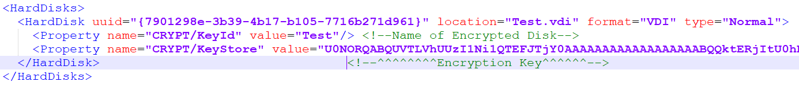
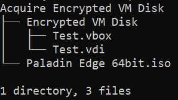
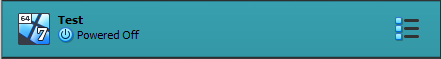
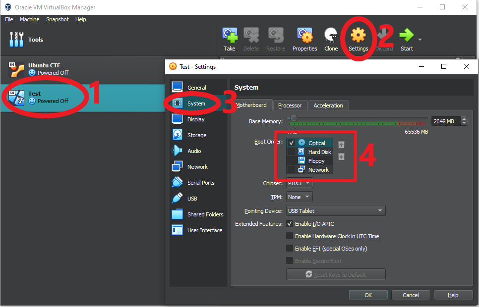
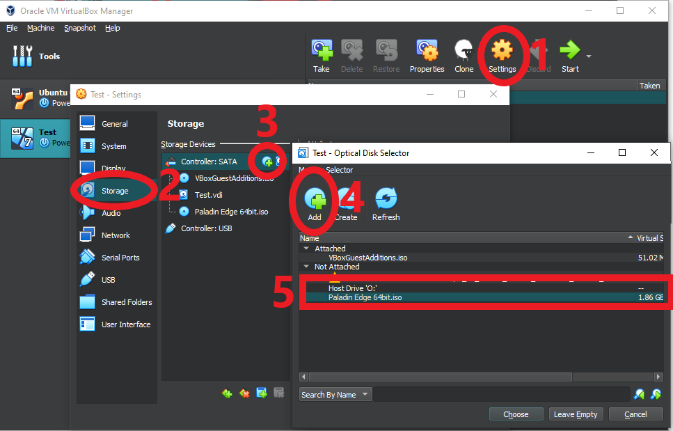
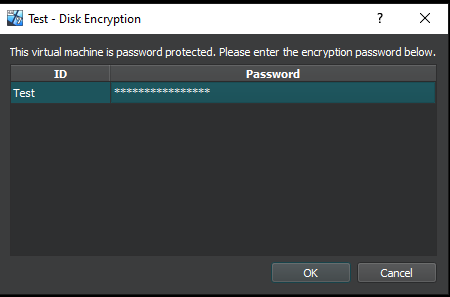
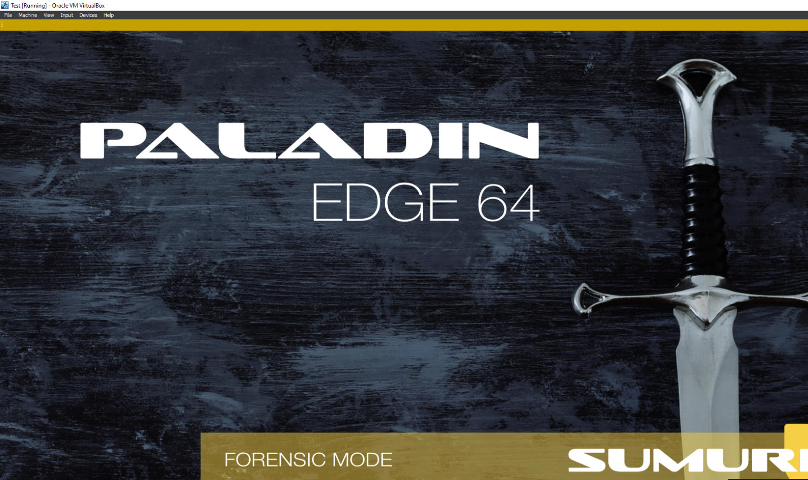
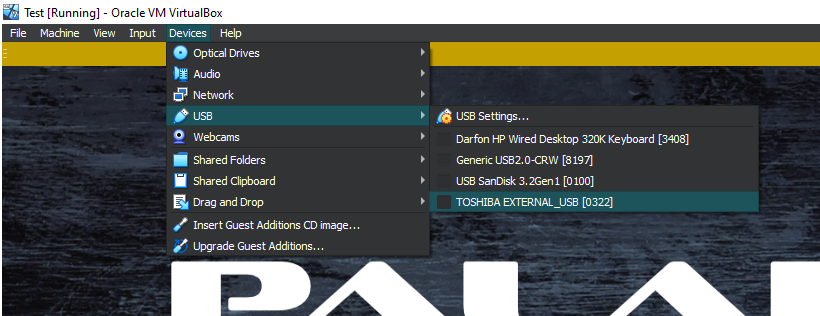
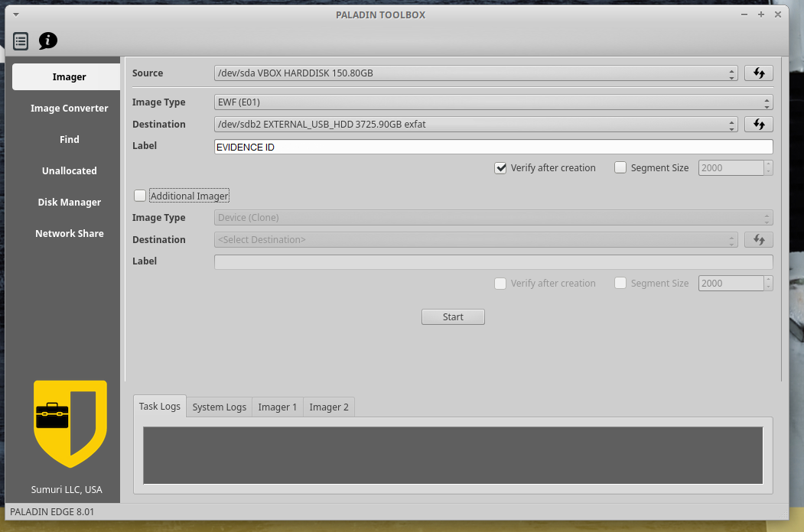

Acquiring an Encrypted Virtual Machine Disk Image
- published
- reading time
- 4 minutes
Acquiring an Encrypted Virtual Machine Disk Image
Example Case:
The exhibit in this instance had ORACLE VirtualBox installed and was actively using a Windows 7 VM (Virtual Machine) to acquire and download illicit material. The VM had a single encrypted disk that was encrypted through VirtualBox’s Full Disk Encryption. A password was provided for the encrypted disk. There is possibility to decrypt the Disk Image through Hashcat if required.
MAGNET AXIOM supports importing VM disk images, although only in a decrypted state. If you are certain that the data at rest is in a decrypted state, you can verify and open its contents by exporting the VM Disk Image file from your acquisition.
GetData Forensic Explorer will happily take the following VM Disk Image filetypes and display a directory structure:
- Virtual Disk Image (.vdi)
- Virtual Hard Disk (.vhd, .vhdx)
- VMWare (.vmdk)
If that is the case, you can load the VM Disk Image into MAGNET AXIOM as the correct operating system and it will happily take the Disk Image like a traditional E01, AFF4, etc.
If Forensic Explorer does not return a directory structure and displays encrypted data, then this guide is for you!
How do encrypted Virtual Machine disks work?
A Virtual Machine itself cannot be encrypted but the attached storages can. A Virtual Machine can have (theoretically) an infinite number of attached drives. Encryption can be set on a per-disk basis. The encryption key for the Virtual Machine disk is not found within the disk itself but actually within the configuration of the Virtual Machine.

You need the configuration to decrypt the Virtual Machine Disk Image. Without it there is no way to recover its contents.
What do we have to do?
Requirements:
- ORACLE VirtualBox
- SUMURI Paladin
- External USB HDD (of the same or greater storage space than the encrypted VM Disk Image)
Essentially, what we need to do in order to acquire the data is:
- Import the Virtual Machine
- Verify that the encrypted Virtual Machine Disk Image is attached.
- Attach Paladin as CD/DVD drive
- Attach an External USB HDD as a passthrough USB drive (This can be done after the VM has booted)
- Boot the VM and input the encrypted VM Disk Image password
- Boot into Paladin
- Image the decrypted VM Disk Image to your External USB HDD.
The reason we image to an External USB HDD is because we want to keep a gap between the VM and network, you wouldn’t plug in an exhibit to the network. Also, its much easier to setup USB passthrough than connecting to a SAMBA share (DATA Stores).
How do we get the data?
First, lets organise our files. I have put our Encrypted Disk Image and Paladin into the same folder. This doesn’t really matter but pulling the files locally will speed up loading and acquisition speeds.

Then, open VirtualBox and add the Virtual Machine. Select “Add” to begin adding the Virtual Machine.
Navigate to the .vbox configuration file which details the disks that are attached to this Virtual Machine. In this example, there is only 1 Encrypted Virtual Machine Disk Image titled “Test.vdi”.

The Virtual Machine should auto-populate in the list of Virtual Machines in VirtualBox.
Before we start the Virtual Machine, let’s do some quick changes in the “Settings” (2).
First, navigate to the “System” settings (3). Then, change the “Boot Order” so that “Optical” is at the top of the list and move the other bootable options to the bottom (4). You can also deactivate, as shown in the photo. This means that the first disk to boot is the Paladin ISO.

Now we need to attach the Paladin ISO to the Virtual Machine.
First, select “Storage” under the “Settings” of the Virtual Machine (2). Next, click “Add Optical Drive” (3). Now “Add” the Paladin ISO to the Virtual Machine (5). Finish your configuration with “Choose”.

You may also need to change the “SATA Drive Attributes” so that the Paladin ISO is in “SATA Port 0”. In the above picture, “VBoxGuestAdditions.iso” is at the top of the list, meaning this is the first disk to boot to once detected.
Now, “Start” the Virtual Machine. Here is where you will be prompted for the Disk Password.

Hopefully you should’ve now booted into Paladin’s home screen.

Before we image the (now) Decrypted Disk Image, we need to add a destination disk for the image to be saved too.
At the top of the Virtual Machine, navigate to “Devices” and add your External USB HDD.
Note: Paladin may require your External USB HDD to be formatted as exFAT.

If your External USB HDD has been detected, you should then be able to image away!
